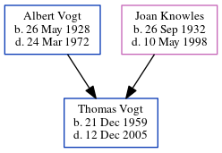

Thomas Gerard Vogt 1959 - 2005
| [ Calendar ] | [ Surnames Index ] | [ Census Index ] | [ Family History ]The older of 2 children of Albert Vogt and Joan Knowles, Thomas Vogt was born on Dec 21, 1959.
He died on Dec 12, 2005.
Parents
- Albert Robert was born on May 26, 1928
- Joan Agnes was born on Sep 26, 1932
Family Tree
Generated by ged2site. Last updated on Jun 12, 2024